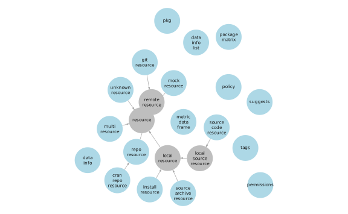

Welcome to val.meter! If we’re going to explore the
internals of the package, the best place to start is the
./R directory! If you take a peek in there you’ll see a few
common prefixes, so let’s start by breaking those down.
-
utils_*: Supporting functions for making some other tailoring other packages to our internal needs. These are pretty low-level, but hopefully aren’t too mysterious. -
class_*:S7class definitions and their methods -
generic_*:S7generics -
data_*: Package data and metric implementations. File names should reflect the field name or most central field for a batch of fields. -
impl_*: Tools for implementing data field methods.
There are a few other miscellaneous files like
options.R, package.R and zzz.R,
but these should be pretty self explanatory.
We’ll walk through the important concepts, largely following these high-level file prefix categories, in more detail below.
S7 Classes
val.meter leverages S7 extensively to
organize its data and methods. S7 classes offer far better
control over data types and their type hierarchies to improve the
stability of val.meter functions and S7
generics allow for more granular dispatch on classes and multiple
dispatch out-of-the-box.
S7 is still maturing, so it’s worth acknowledging that
it comes with some (currently) unavoidable hurdles. After an assessment
period, we decided these shortcomings did not outweigh the benefits it
brings.
val.meter provides a handful of classes, representing
the foundational data types of the package.
library(igraph)
#>
#> Attaching package: 'igraph'
#> The following objects are masked from 'package:stats':
#>
#> decompose, spectrum
#> The following object is masked from 'package:base':
#>
#> union
# since we're all developers, don't mind me taking a peek behind the curtain
val_meter <- getNamespace("val.meter")
g <- val_meter$class_graph("val.meter")
# do some slight class renaming to make them easier to read
V(g)$label <- sapply(strsplit(V(g)$class, "_"), paste, collapse = "\n")
par(mar = c(0, 0, 0, 0))
plot(
g,
layout = layout_with_graphopt(
g,
niter = 5000,
charge = 0.2,
spring.length = 4,
spring.constant = 8
),
vertex.size = 30,
vertex.frame.color = NA,
vertex.label = V(g)$label,
vertex.label.dist = 0,
vertex.label.degree = -pi / 2,
vertex.label.family = "sans-serif",
vertex.label.cex = 0.6,
vertex.label.color = "grey8",
edge.arrow.size = 0.25,
vertex.color = ifelse(V(g)$abstract, "grey", "lightblue"),
)
So that’s a lot to take in, but let’s break down what we’re seeing.
First, there’s a large cluster of resource classes. These
account for over half of the classes that val.meter
exports.
Similarly, there’s a set of classes that are really just wrappers
around base types. permissions, tags and
suggests are just character vectors with a bit
of S7 sprinkled on top to do some type checking and ensure
consistency.
And just like that, we’re down to only a small set of classes that we really need to concern ourselves with.
-
data_infoanddata_info_list:data_infois the more important one of the two, and is used to provide structure to package data metadata.data_info_listis only used for formatting console output. -
policy: This class is a user-facing object used for specifying the policies for how resources are discovered and what capabilities execution should have. - And last but certainly not least,
pkgis the workhorse ofval.meter. It binds a set of resource for collecting data with the data they produced.
Since we’ll be exploring the internals of val.meter,
we’re going to load our entire package namespace.
pkgload::load_all()
S7 Generics
In addition to a swath of classes, val.meter adds a few
S7 generics. Briefly, generics are functions that
change their behavior depending on the class of the arguments, arriving
at the actual function to be executed through a process called
method dispatch.
There are two central generics that provide the core functionality of
val.meter: pkg_data_derive() and
pkg_data_info(). These describe the behavior and metadata
of derived package data.
The functions themselves are not too cumbersome, but how they’re used might be a bit of a barrier if you find yourself diving deep into debugging the package. The reason for this lies in how we want developers to work. When we write metrics, we want developers to be able to write code that is straightforward, intuitive and easy to read.
We can derive some data for a package using just a package object and a “field” (the name for the data in the package object):
rpkg <- random_pkg()
pkg_data_derive(pkg = rpkg, field = "r_cmd_check_error_count")
#> [1] 0Let’s see what code was needed to implement this
#> function (pkg, resource, ...)
#> {
#> length(pkg$r_cmd_check$errors)
#> }
#> <environment: namespace:val.meter>This code is pretty straightforward! We can count on
pkg$r_cmd_check existing, and we only needed to tease out
the errors. We’ll get to the details of how this works down in the
section on lazy evaluation, but for now we can see
that this generic let us keep the implementation details rather
straightforward.
Lazy Evaluation
As mentioned, S7 dispatch (with a little S3
thrown in for good measure), is the powerhouse behind simple metric
implementations.
Lazy lists
pkg objects are S7 objects. S7
objects have properties that are accessed using the
@ operator. In fact, the pkg does too! But in
most cases, we’re more concerned with how it masquerades as a
list, exposing data through the $ operator (or
your choice of [["name"]] or [c("names")] just
like an ordinary list).
pkg objects go to quite some lengths to convince you
they’re lists! They have tab completion, print out their contents
almost like a list and you can grab their
list-like entries using names().
names(rpkg)
#> [1] "r_cmd_check" "desc"
#> [3] "archive_md5" "vignette_count"
#> [5] "web_html" "web_url"
#> [7] "name" "version"
#> [9] "r_cmd_check_error_count" "downloads_total"
#> [11] "dependency_count" "has_website"Yep. There they are. All the fields you can just assume
exist in this pkg object. We say “assume” because
they don’t actually exist in the pkg - at least not yet.
This list is exceptionally lazy and will only work if it
absolutely has to. This is a nice quality for us, since we also only
want to wait as long as we absolutely have to to get the data we care
about.
If we take a peek at our rpkg object, we’ll see:
#> <val.meter::pkg>
#> @resource
#> <val.meter::mock_resource>
#> @ package: chr "quaintwellbeing"
#> @ version: chr "3.1.5"
#> @ id : int 1
#> @ md5 : chr "f1c516596e9ad5015218ead8114487d5"
#> @permissions
#> <val.meter::permissions> chr [1:3] "write" "execution" "network"
#> $vignette_count
#> <promise>
#> $r_cmd_check_error_count
#> <promise>
#> $downloads_total
#> <promise>
#> $dependency_count
#> <promise>
#> $has_website
#> <promise>
#> $r_cmd_check (internal)
#> $desc (internal)
#> $archive_md5 (internal)
#> $web_html (internal)
#> $web_url (internal)
#> $name (internal)
#> $version (internal)You’ll see that there’s a lot of data missing in there, but that doesn’t mean we can’t use it! If we try to use one of these fields we’ll get some data out.
rpkg$r_cmd_check_error_count
#> [1] 0And if we look at our object again, we’ll see that it suddenly has some new data.
#> <val.meter::pkg>
#> @resource
#> <val.meter::mock_resource>
#> @ package: chr "quaintwellbeing"
#> @ version: chr "3.1.5"
#> @ id : int 1
#> @ md5 : chr "f1c516596e9ad5015218ead8114487d5"
#> @permissions
#> <val.meter::permissions> chr [1:3] "write" "execution" "network"
#> $vignette_count
#> <promise>
#> $r_cmd_check_error_count
#> [1] 0
#> $downloads_total
#> <promise>
#> $dependency_count
#> <promise>
#> $has_website
#> <promise>
#> $r_cmd_check (internal)
#> $desc (internal)
#> $archive_md5 (internal)
#> $web_html (internal)
#> $web_url (internal)
#> $name (internal)
#> $version (internal)After we accessed our data, the package object did the work to
compute it. In fact, it also computed any necessary dependent data like
the r_cmd_check results themselves - whatever was necessary
to give us the data we wanted. If any errors or constraints prevented us
from calculating dependent data, those errors would be surfaced through
to us here as well.
Dispatch for lazy evaluation
Now let’s learn about how this is achieved. The first part is easy. A
pkg contains an environment that gets iteratively populated
as fields are requested.
But what happens when a field is requested? We call
rpkg$r_cmd_check_error_count, but what happens then? This
is where S7 comes in. To make sure that we’re deriving this
data for the right types of package resources, we dispatch on the
package, resource type and field, arriving at a specialized function for
precisely the type of package we have. The astute reader will notice
that the field name, in this case "r_cmd_check_error_count"
isn’t a class at all, it will always be a class_character -
so how does that help us?
Well we do dispatch on class_character, but we
immediately use that character value to create a unique class name based
on the field name that allows us to dispatch to a unique function. We
can take a look under the hood at exactly what code gets run:
method(pkg_data_derive, list(pkg, class_any, class_character))
#> <S7_method> method(pkg_data_derive, list(class_any, class_any, class_character))
#> function (pkg, resource, field, ..., field_name)
#> {
#> pkg_data_derive(pkg, resource = NULL, field = as_pkg_data(field),
#> ..., field_name = field)
#> }
#> <environment: namespace:val.meter>As you can see, we immediately recurse, but given a new
field parameter: a data-less object with a class for
dispatch. In our case, this would be
as_pkg_data("r_cmd_check_error_count")
#> [1] "r_cmd_check_error_count"
#> attr(,"class")
#> [1] "pkg_data_field_r_cmd_check_error_count"
#> [2] "pkg_data_field"With a unique class name, we can dispatch down to the unique method that will help us derive this particular type of data.
Error handling during lazy evaluation
We glossed over one small detail. We don’t actually call
pkg_data_derive directly when we access data through
pkg$field. Instead, we call get_pkg_data,
which wraps calls to pkg_data_derive with a little bit of
error handling.
This additional layer is critical, because it helps us capture errors
if they occur and capture relationships and dependencies between data.
For example, if we want to calculate
pkg$r_cmd_check_error_count, which depends on
pkg$r_cmd_check, we don’t want errors to be thrown
immediately. Instead, we want to record the fact that an error was
thrown when running r_cmd_check and then indicate that
r_cmd_check_error_count wasn’t able to be calculated
because of this data dependency.
Let’s see what it would look like if this were to occur.
r <- install_resource(path = find.package("val.meter"))
p <- pkg(r)
p$name#> <error/val_meter_derive_dependency_error>
#> ! field depends on field "desc" that threw an error during derivationSure enough, we can see that we’ve evaluated the internal field,
"desc", which produced a (mocked) error and prevented us
from completing calculation of our package name. We can confirm by
looking at the internal "desc" data:
p$desc
#> <error/val_meter_derive_error>
#> ! when deriving field "desc"
#> mocked error in desc::descError types
For consistency, internally most errors are raised through the
pre-specified error types in err$ (if you see anything that
could be generalized, please add the error type!). This has a
few key benefits. The messaging is consistent across various errors, we
can focus all the call stack handling in one place, and we can recreate
errors easily when parsed back from a PACKAGES file.
Robust error handling is key to good reporting, so we want to be sure to give errors a designated class and report errors in a way where they provide effective context for why the error was raised.
You may discover the very conveniently named error()
function. It would be reasonable to assume that this is how errors
should be constructed. However, this function is intended only for
serialization. When we write errors out to a PACKAGES file
we want something succinct and reproducible. An error type such as
#> <error/val_meter_missing_suggests_error>
#> ! data derivation requires suggests: abcwill be written out as:
Metric/abc@R: error("missing_suggests", "abc")When we parse this file back into a pkg object, we can
easily re-construct our error (barring the original callstack) by simply
evaluating this little snippet.
eval(parse(text = 'error("missing_suggests", "abc")'))
#> <error/val_meter_missing_suggests_error>
#> ! data derivation requires suggests: abcWhere err$missing_suggets captures additional
information about the calling frame to provide an effective traceback,
reproducing this error only reconstructs the messaging.
Data simulation
In order to build effective mock packages for testing and example, we
also provide features for generating convincing fake data. We leverage
the same internals that we do for deriving all the real package data,
but dispatch on a mock_resource which allows us to fall
back to artificial data generating methods.
We also bundle a dataset of package names derived from a word list of words with positive connotations and a handful of common R package naming convention patterns.